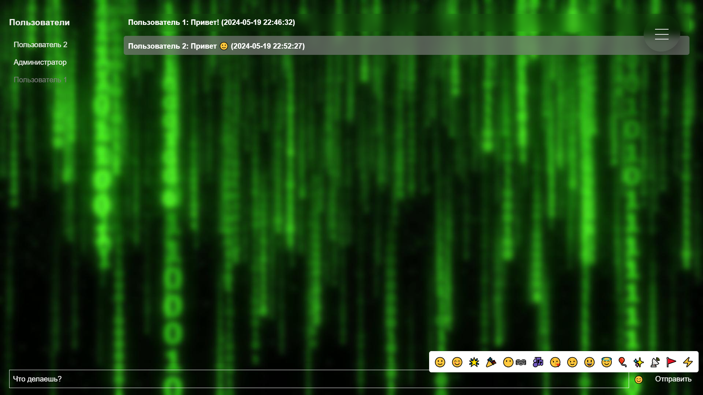
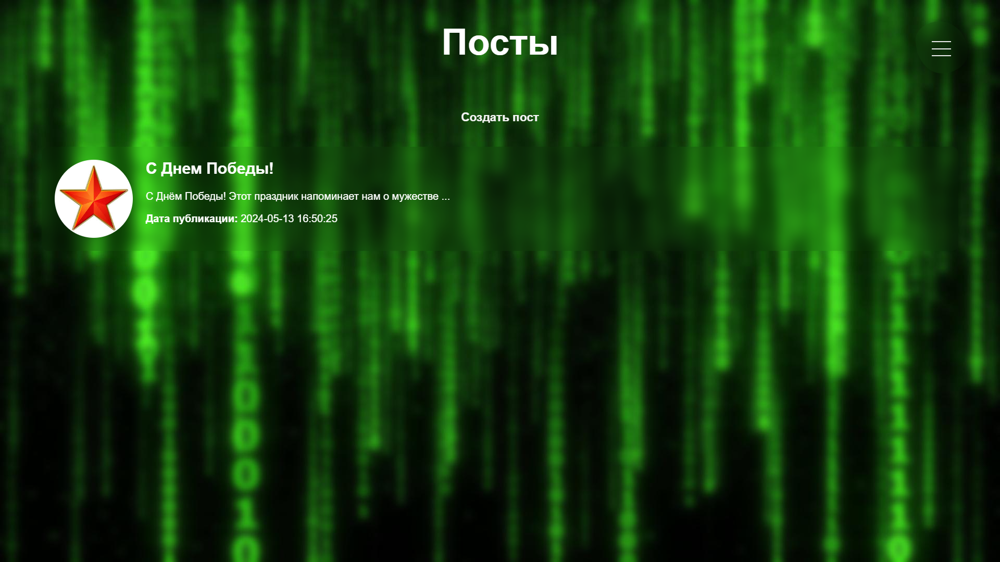
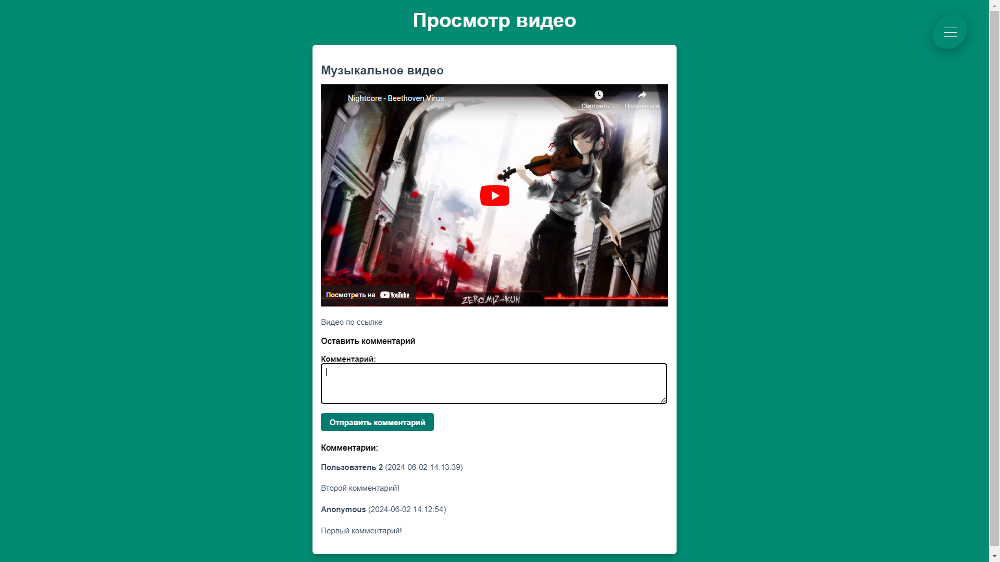
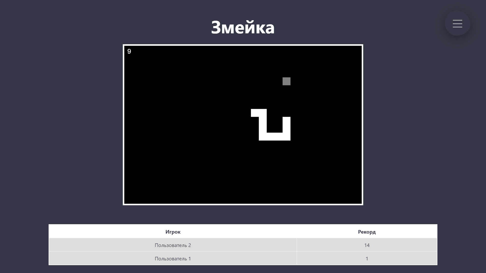
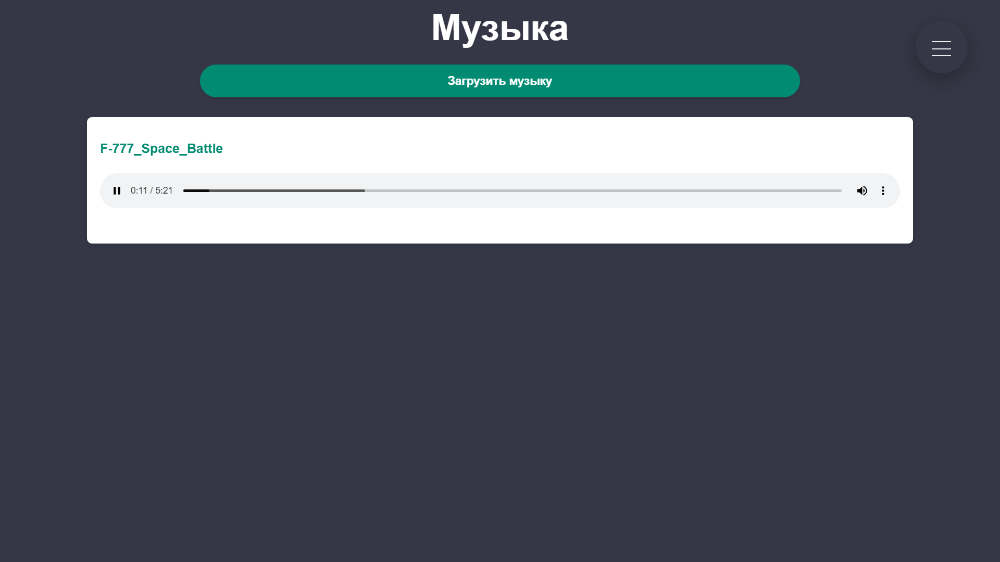

Добро пожаловать в социальную сеть OpenNET!

Общайтесь с пользователями со всего мира!

Просматривайте актуальные новости!

Смотрите и публикуйте собственные видео.

Соревнуйтесь с друзьями в классических видеоиграх!

Слушайте и публикуйте собственную музыку.